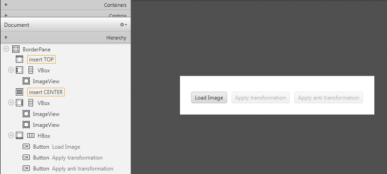

Fourier Transform¶
Note
We assume that by now you have already read the previous tutorials. If not, please check previous tutorials at http://polito-java-opencv-tutorials.readthedocs.org/en/latest/index.html. You can also find the source code and resources at https://github.com/java-opencv/Polito-Java-OpenCV-Tutorials-Source-Code
Goal¶
In this tutorial we are going to create a JavaFX application where we can load a picture from our file system and apply to it the DFT and the inverse DFT.
What is the Fourier Transform?¶
The Fourier Transform will decompose an image into its sinus and cosines components. In other words, it will transform an image from its spatial domain to its frequency domain. The result of the transformation is complex numbers. Displaying this is possible either via a real image and a complex image or via a magnitude and a phase image. However, throughout the image processing algorithms only the magnitude image is interesting as this contains all the information we need about the images geometric structure. For this tutorial we are going to use basic gray scale image, whose values usually are between zero and 255. Therefore the Fourier Transform too needs to be of a discrete type resulting in a Discrete Fourier Transform (DFT). The DFT is the sampled Fourier Transform and therefore does not contain all frequencies forming an image, but only a set of samples which is large enough to fully describe the spatial domain image. The number of frequencies corresponds to the number of pixels in the spatial domain image, i.e. the image in the spatial and Fourier domain are of the same size.
What we will do in this tutorial¶
- In this guide, we will:
- Load an image from a file chooser.
- Apply the DFT to the loaded image and show it.
- Apply the iDFT to the transformed image and show it.
Getting Started¶
Let’s create a new JavaFX project. In Scene Builder set the windows element so that we have a Border Pane with:
- on the LEFT an ImageView to show the loaded picture:
<ImageView fx:id="originalImage" />
- on the RIGHT two ImageViews one over the other to display the DFT and the iDFT;
<ImageView fx:id="transformedImage" />
<ImageView fx:id="antitransformedImage" />
- on the BOTTOM three buttons, the first one to load the picture, the second one to apply the DFT and show it, and the last one to apply the anti-transform and show it.
<Button alignment="center" text="Load Image" onAction="#loadImage"/>
<Button fx:id="transformButton" alignment="center" text="Apply transformation" onAction="#transformImage" disable="true" />
<Button fx:id="antitransformButton" alignment="center" text="Apply anti transformation" onAction="#antitransformImage" disable="true" />
The gui will look something like this one:
Load the file¶
First of all you need to add to your project a folder resources with two files in it. One of them is a sine function and the other one is a circular aperture.
In the Controller file, in order to load the image to our program, we are going to use a filechooser:
private FileChooser fileChooser;
When we click the load button we have to set the initial directory of the FC and open the dialog. The FC will return the selected file:
File file = new File("./resources/");
this.fileChooser.setInitialDirectory(file);
file = this.fileChooser.showOpenDialog(this.main.getStage());
Once we’ve loaded the file we have to make sure that it’s going to be in grayscale and display the image into the image view:
this.image = Highgui.imread(file.getAbsolutePath(), Highgui.CV_LOAD_IMAGE_GRAYSCALE);
this.originalImage.setImage(this.mat2Image(this.image));
Applying the DFT¶
First of all expand the image to an optimal size. The performance of a DFT is dependent of the image size. It tends to be the fastest for image sizes that are multiple of the numbers two, three and five. Therefore, to achieve maximal performance it is generally a good idea to pad border values to the image to get a size with such traits. The getOptimalDFTSize() returns this optimal size and we can use the copyMakeBorder() function to expand the borders of an image:
int addPixelRows = Core.getOptimalDFTSize(image.rows());
int addPixelCols = Core.getOptimalDFTSize(image.cols());
Imgproc.copyMakeBorder(image, padded, 0, addPixelRows - image.rows(), 0, addPixelCols - image.cols(),Imgproc.BORDER_CONSTANT, Scalar.all(0));
The appended pixels are initialized with zero.
The result of the DFT is complex so we have to make place for both the complex and the real values. We store these usually at least in a float format. Therefore we’ll convert our input image to this type and expand it with another channel to hold the complex values:
padded.convertTo(padded, CvType.CV_32F);
this.planes.add(padded);
this.planes.add(Mat.zeros(padded.size(), CvType.CV_32F));
Core.merge(this.planes, this.complexImage);
Now we can apply the DFT and then get the real and the imaginary part from the complex image:
Core.dft(this.complexImage, this.complexImage);
Core.split(complexImage, newPlanes);
Core.magnitude(newPlanes.get(0), newPlanes.get(1), mag);
Unfortunately the dynamic range of the Fourier coefficients is too large to be displayed on the screen. To use the gray scale values to for visualization we can transform our linear scale to a logarithmic one:
Core.add(mag, Scalar.all(1), mag);
Core.log(mag, mag);
Remember, that at the first step, we expanded the image? Well, it’s time to throw away the newly introduced values. For visualization purposes we may also rearrange the quadrants of the result, so that the origin (zero, zero) corresponds with the image center:
image = image.submat(new Rect(0, 0, image.cols() & -2, image.rows() & -2));
int cx = image.cols() / 2;
int cy = image.rows() / 2;
Mat q0 = new Mat(image, new Rect(0, 0, cx, cy));
Mat q1 = new Mat(image, new Rect(cx, 0, cx, cy));
Mat q2 = new Mat(image, new Rect(0, cy, cx, cy));
Mat q3 = new Mat(image, new Rect(cx, cy, cx, cy));
Mat tmp = new Mat();
q0.copyTo(tmp);
q3.copyTo(q0);
tmp.copyTo(q3);
q1.copyTo(tmp);
q2.copyTo(q1);
tmp.copyTo(q2);
Now we have to normalize our values by using the normalize() function in order to transform the matrix with float values into a viewable image form:
Core.normalize(mag, mag, 0, 255, Core.NORM_MINMAX);
The last step is to show the magnitude image in the ImageView:
this.transformedImage.setImage(this.mat2Image(magnitude));
Applying the iDFT¶
To apply the inverse DFT we simply use the idft() function, extract the real values from the complex image with the split() function, and normalize the result with normalize():
Core.idft(this.complexImage, this.complexImage);
Mat restoredImage = new Mat();
Core.split(this.complexImage, this.planes);
Core.normalize(this.planes.get(0), restoredImage, 0, 255, Core.NORM_MINMAX);
Finally we can show the result on the proper ImageView:
this.antitransformedImage.setImage(this.mat2Image(restoredImage));
Analyzing the results¶
- sinfunction.png

The image is a horizontal sine of 4 cycles. Notice that the DFT just has a single component, represented by 2 bright spots symmetrically placed about the center of the DFT image. The center of the image is the origin of the frequency coordinate system. The x-axis runs left to right through the center and represents the horizontal component of frequency. The y-axis runs bottom to top through the center and represents the vertical component of frequency. There is a dot at the center that represents the (0,0) frequency term or average value of the image. Images usually have a large average value (like 128) and lots of low frequency information so FT images usually have a bright blob of components near the center. High frequencies in the horizontal direction will cause bright dots away from the center in the horizontal direction.
- circle.png

In this case we have a circular aperture, and what is the Fourier transform of a circular aperture? The diffraction disk and rings. A large aperture produces a compact transform, instead a small one produces a larger Airy pattern; thus the disk is greater if aperture is smaller; according to Fourier properties, from the center to the middle of the first dark ring the distance is (1.22 x N) / d; in this case N is the size of the image, and d is the diameter of the circle. An Airy disk is the bright center of the diffraction pattern created from a circular aperture ideal optical system; nearly half of the light is contained in a diameter of 1.02 x lamba x f_number.
Source Code¶
public class FourierTransform extends Application {
// the main stage
private Stage primaryStage;
@Override
public void start(Stage primaryStage) {
try
{
// load the FXML resource
FXMLLoader loader = new FXMLLoader(getClass().getResource("FT_FX.fxml"));
BorderPane root = (BorderPane) loader.load();
// set a whitesmoke background
root.setStyle("-fx-background-color: whitesmoke;");
Scene scene = new Scene(root, 800, 600);
scene.getStylesheets().add(getClass().getResource("application.css").toExternalForm());
// create the stage with the given title and the previously created scene
this.primaryStage = primaryStage;
this.primaryStage.setTitle("Fourier Transform");
this.primaryStage.setScene(scene);
this.primaryStage.show();
// init the controller
FT_Controller controller = loader.getController();
controller.setMainApp(this);
controller.init();
}
catch(Exception e) {
e.printStackTrace();
}
}
/**
* Get the main stage
*
* @return the stage
*/
protected Stage getStage()
{
return this.primaryStage;
}
public static void main(String[] args) {
// load the native OpenCV library
System.loadLibrary(Core.NATIVE_LIBRARY_NAME);
launch(args);
}
}
public class FT_Controller {
// images to show in the view
@FXML
private ImageView originalImage;
@FXML
private ImageView transformedImage;
@FXML
private ImageView antitransformedImage;
// a FXML button for performing the transformation
@FXML
private Button transformButton;
// a FXML button for performing the antitransformation
@FXML
private Button antitransformButton;
// the main app
private FourierTransform main;
// the JavaFX file chooser
private FileChooser fileChooser;
// support variables
private Mat image;
private List<Mat> planes;
// the final complex image
private Mat complexImage;
/**
* Init the needed variables
*/
protected void init()
{
this.fileChooser = new FileChooser();
this.image = new Mat();
this.planes = new ArrayList<>();
this.complexImage = new Mat();
}
/**
* Load an image from disk
*/
@FXML
protected void loadImage()
{
// show the open dialog window
File file = new File("./resources/");
this.fileChooser.setInitialDirectory(file);
file = this.fileChooser.showOpenDialog(this.main.getStage());
if (file != null)
{
// read the image in gray scale
this.image = Highgui.imread(file.getAbsolutePath(), Highgui.CV_LOAD_IMAGE_GRAYSCALE);
// show the image
this.originalImage.setImage(this.mat2Image(this.image));
// set a fixed width
this.originalImage.setFitWidth(250);
// preserve image ratio
this.originalImage.setPreserveRatio(true);
// update the UI
this.transformButton.setDisable(false);
// empty the image planes if it is not the first image to be loaded
if (!this.planes.isEmpty())
this.planes.clear();
}
}
/**
* The action triggered by pushing the button for apply the dft to the
* loaded image
*/
@FXML
protected void transformImage()
{
// optimize the dimension of the loaded image
Mat padded = this.optimizeImageDim(this.image);
padded.convertTo(padded, CvType.CV_32F);
// prepare the image planes to obtain the complex image
this.planes.add(padded);
this.planes.add(Mat.zeros(padded.size(), CvType.CV_32F));
// prepare a complex image for performing the dft
Core.merge(this.planes, this.complexImage);
// dft
Core.dft(this.complexImage, this.complexImage);
// optimize the image resulting from the dft operation
Mat magnitude = this.createOptimizedMagnitude(this.complexImage);
// show the result of the transformation as an image
this.transformedImage.setImage(this.mat2Image(magnitude));
// set a fixed width
this.transformedImage.setFitWidth(250);
// preserve image ratio
this.transformedImage.setPreserveRatio(true);
// enable the button for perform the antitransformation
this.antitransformButton.setDisable(false);
}
/**
* Optimize the image dimensions
*
* @param image
* the {@link Mat} to optimize
* @return the image whose dimensions have been optimized
*/
private Mat optimizeImageDim(Mat image)
{
// init
Mat padded = new Mat();
// get the optimal rows size for dft
int addPixelRows = Core.getOptimalDFTSize(image.rows());
// get the optimal cols size for dft
int addPixelCols = Core.getOptimalDFTSize(image.cols());
// apply the optimal cols and rows size to the image
Imgproc.copyMakeBorder(image, padded, 0, addPixelRows - image.rows(), 0, addPixelCols - image.cols(),Imgproc.BORDER_CONSTANT, Scalar.all(0));
return padded;
}
/**
* Optimize the magnitude of the complex image obtained from the DFT, to
* improve its visualization
*
* @param complexImage
* the complex image obtained from the DFT
* @return the optimized image
*/
private Mat createOptimizedMagnitude(Mat complexImage)
{
// init
List<Mat> newPlanes = new ArrayList<>();
Mat mag = new Mat();
// split the comples image in two planes
Core.split(complexImage, newPlanes);
// compute the magnitude
Core.magnitude(newPlanes.get(0), newPlanes.get(1), mag);
// move to a logarithmic scale
Core.add(mag, Scalar.all(1), mag);
Core.log(mag, mag);
// optionally reorder the 4 quadrants of the magnitude image
this.shiftDFT(mag);
// normalize the magnitude image for the visualization since both JavaFX
// and OpenCV need images with value between 0 and 255
Core.normalize(mag, mag, 0, 255, Core.NORM_MINMAX);
// you can also write on disk the resulting image...
// Highgui.imwrite("../magnitude.png", mag);
return mag;
}
/**
* Reorder the 4 quadrants of the image representing the magnitude, after
* the DFT
*
* @param image
* the {@link Mat} object whose quadrants are to reorder
*/
private void shiftDFT(Mat image)
{
image = image.submat(new Rect(0, 0, image.cols() & -2, image.rows() & -2));
int cx = image.cols() / 2;
int cy = image.rows() / 2;
Mat q0 = new Mat(image, new Rect(0, 0, cx, cy));
Mat q1 = new Mat(image, new Rect(cx, 0, cx, cy));
Mat q2 = new Mat(image, new Rect(0, cy, cx, cy));
Mat q3 = new Mat(image, new Rect(cx, cy, cx, cy));
Mat tmp = new Mat();
q0.copyTo(tmp);
q3.copyTo(q0);
tmp.copyTo(q3);
q1.copyTo(tmp);
q2.copyTo(q1);
tmp.copyTo(q2);
}
/**
* The action triggered by pushing the button for apply the inverse dft to
* the loaded image
*/
@FXML
protected void antitransformImage()
{
Core.idft(this.complexImage, this.complexImage);
Mat restoredImage = new Mat();
Core.split(this.complexImage, this.planes);
Core.normalize(this.planes.get(0), restoredImage, 0, 255, Core.NORM_MINMAX);
this.antitransformedImage.setImage(this.mat2Image(restoredImage));
// set a fixed width
this.antitransformedImage.setFitWidth(250);
// preserve image ratio
this.antitransformedImage.setPreserveRatio(true);
}
/**
* Set the main app (needed for the FileChooser modal window)
*
* @param mainApp
* the main app
*/
public void setMainApp(FourierTransform mainApp)
{
this.main = mainApp;
}
/**
* Convert a Mat object (OpenCV) in the corresponding Image for JavaFX
*
* @param frame
* the {@link Mat} representing the current frame
* @return the {@link Image} to show
*/
private Image mat2Image(Mat frame)
{
// create a temporary buffer
MatOfByte buffer = new MatOfByte();
// encode the frame in the buffer, according to the PNG format
Highgui.imencode(".png", frame, buffer);
// build and return an Image created from the image encoded in the
// buffer
return new Image(new ByteArrayInputStream(buffer.toArray()));
}
}
<BorderPane xmlns:fx="http://javafx.com/fxml/1" fx:controller="application.FT_Controller">
<left>
<VBox alignment="CENTER">
<padding>
<Insets right="10" left="10" />
</padding>
<ImageView fx:id="originalImage" />
</VBox>
</left>
<right>
<VBox alignment="CENTER" spacing="10">
<padding>
<Insets right="10" left="10" />
</padding>
<ImageView fx:id="transformedImage" />
<ImageView fx:id="antitransformedImage" />
</VBox>
</right>
<bottom>
<HBox alignment="CENTER" spacing="10">
<padding>
<Insets top="25" right="25" bottom="25" left="25" />
</padding>
<Button alignment="center" text="Load Image" onAction="#loadImage"/>
<Button fx:id="transformButton" alignment="center" text="Apply transformation" onAction="#transformImage" disable="true" />
<Button fx:id="antitransformButton" alignment="center" text="Apply anti transformation" onAction="#antitransformImage" disable="true" />
</HBox>
</bottom>
</BorderPane>